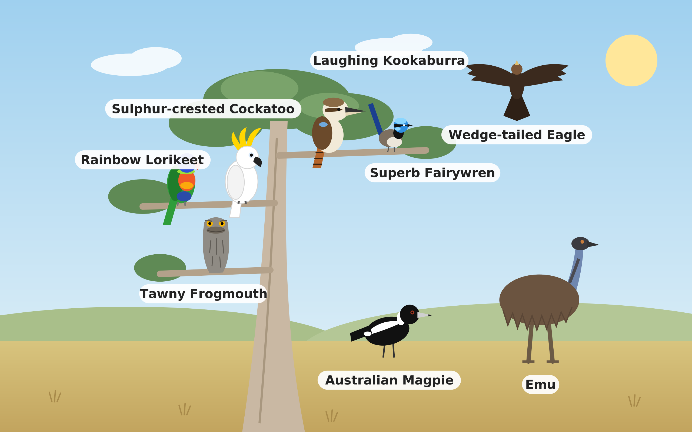

Australian Bird Sightings 2025
Introduction
Birdwatchers reported eight familiar Australian birds over 867,000 times in 2025 through the citizen science apps eBird and iNaturalist. Where were they seen, and what does that tell us about the birds – and about the people watching them?

1. Comparing bird species
A few familiar city birds dominate the reports.
What we see. The Australian Magpie was reported 252,746 times, more than any other bird. Five common species make up 94% of all sightings, while the Emu, Wedge-tailed Eagle and Tawny Frogmouth together make up under 6%.
Why. This reflects where people look as much as how many birds there are. The top five are bold, noisy birds of suburbs and parks, seen on everyday walks: 62% of all birdwatchers reported a Magpie. The Emu lives mostly in open country far from cities, and only 15% of observers recorded one.
What we see. Out of 100 squares, the Magpie fills 29 and the Rainbow Lorikeet 20, so two birds make up almost half of all sightings. The three least reported birds share just 6 squares.
Why. Loud, colourful and confident birds are easily noticed and logged, so they dominate the record. Quiet or rural birds can be common yet rarely recorded. The share of sightings shows what people notice, not how many birds exist.
2. Where and when are birds observed?
Observations are far from even. Small, populous areas in the south-east produce most reports, while the vast inland contributes very few – birdwatching follows people.
What we see. The ACT has 19,111 sightings per 1,000 km², about 16 times Victoria, the next highest. The Northern Territory has fewer than 4, and Western Australia under 14.
Why. Sightings per area follow people. The ACT is small and densely settled, with 1,277 active birdwatchers covering just 2,358 km². The NT and WA are huge but sparsely populated, so most of their land is rarely visited by anyone with a birding app.
What we see. The biggest circles sit on the capital cities. The area around Melbourne alone has 81,410 sightings, and the five busiest areas hold over a third of all sightings in Australia.
Why. Most birdwatching happens close to home, in urban parks, gardens and wetlands. Switching the species to the Emu moves the circles inland, showing that rarer country birds are recorded mainly when observers travel to where those birds live.
What we see. Sightings dip to 60,669 in February, rise steadily through winter and peak at 93,308 in October before easing over summer. October has 54% more sightings than February.
Why. Spring is breeding season, when birds call, display and build nests, so they are easier to find. People change too: active observers rise from 4,666 in February to 7,144 in October. More eyes in the mild spring weather mean more records.
3. How do the seasons change sightings?
Spring brings the most reports for almost every species – partly more bird activity, and partly more people out birdwatching.
What we see. Spring has 256,447 sightings, almost 30% of the year. Autumn is the quietest season with 192,119, while summer and winter sit in between.
Why. The spring peak combines more visible birds with more people outdoors. Breeding birds are louder and busier, and pleasant weather draws observers out. In autumn, after breeding, birds are quieter and fewer people go out looking for them.
What we see. The Magpie stays 1st and the Emu 8th in every month. The Superb Fairywren drops from 3rd to 5th in August, and the Tawny Frogmouth overtakes the Wedge-tailed Eagle from October.
Why. Male fairywrens lose their bright blue breeding colours in the cooler months, making them easier to overlook. In spring, frogmouths nest in the open in parks and gardens, so they are easier for people to spot and photograph than at other times of year.
What we see. The mix of birds barely changes through the year. The Magpie holds 28–31% of sightings every month, and the five common birds always make up about 95%. The clearest shift is the Superb Fairywren, whose share falls from about 19% in January to about 14% in winter, then recovers.
Why. Because each bird keeps a similar share, the spring rise in sightings is not driven by any one species: more observers simply log more of everything. The fairywren is the exception. Males lose their bright blue breeding colours in the cooler months, so they are easier to overlook.
4. Where is bird diversity highest?
Counting how many of the eight species appear in each area shows where you could see the widest range of these birds – and where we simply don't know.
What we see. The darkest squares, where all eight species were seen, cluster in the south-east. Large parts of inland Australia are white, and the WA deserts produced only 145 sightings.
Why. White does not mean no birds. It means no one recorded them. Remote areas have few roads and few people, so they are rarely surveyed. Diversity looks highest where observers are most active, so the map reflects birdwatchers as much as birds.
What we see. The Magpie is the largest share of sightings in most states. Queensland is led by the Rainbow Lorikeet, Tasmania by the Superb Fairywren (41%), and the NT by cockatoos (73%).
Why. Each state's mix reflects both its birds and its observers. Fairywrens do not live in WA or the NT, so they score 0 there. In the NT, two thirds of sightings come from around Darwin, where cockatoos are common, so a few observers in one city shape the whole territory's figures.
What we see. The Wedge-tailed Eagle was seen in 1,338 map squares, the most of any bird, despite having over 10 times fewer sightings than the Magpie. The Superb Fairywren covers the fewest squares (456).
Why. Eagles range over open country and are often spotted from the road during long drives, so they are recorded in many different places but only once or twice in each. Fairywrens are reported often, but mostly in the same busy urban parks.
About the data
Sightings come from the eBird Basic Dataset (Cornell Lab of Ornithology) and research-grade iNaturalist observations, 1 January – 31 December 2025. "Sightings" means the number of records, not the number of birds. Citizen science data reflects where people look for birds, so remote areas are under-represented.
State boundaries: Australian Bureau of Statistics (2026), ASGS Edition 4, simplified and converted to TopoJSON with mapshaper.